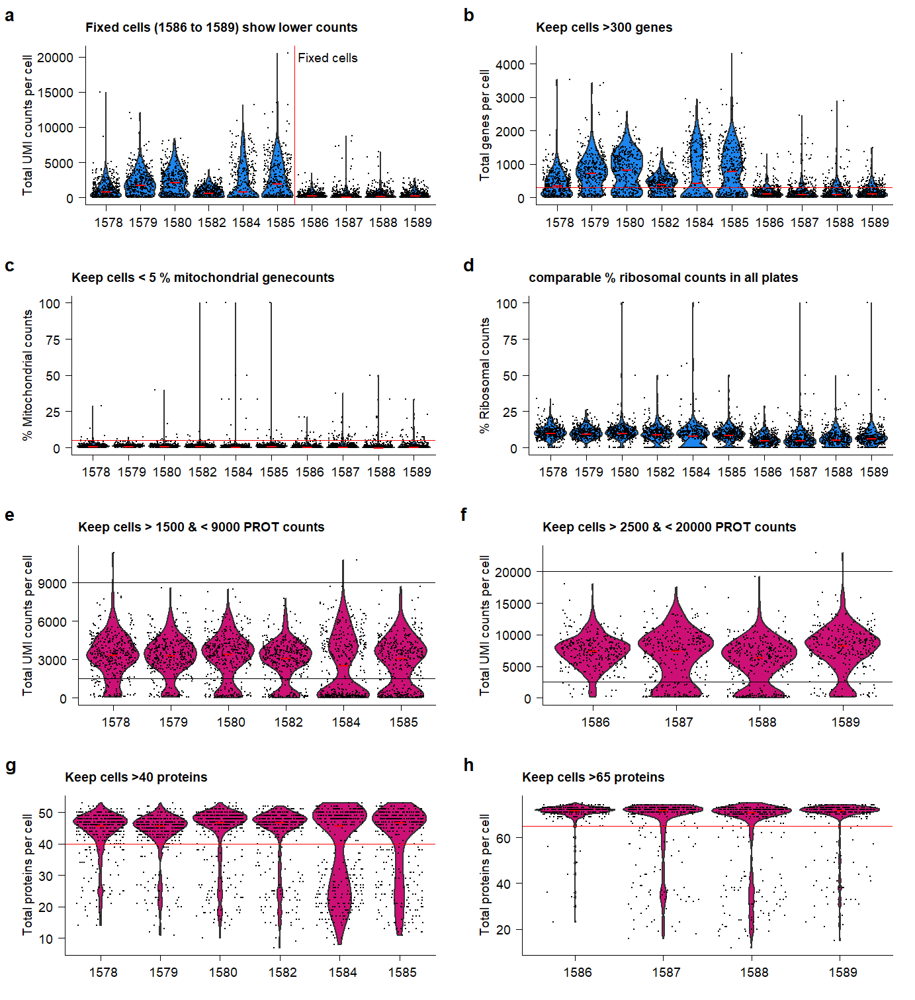

Last updated: 2022-12-16
Checks: 7 0
Knit directory:
Multimodal-Plasmacell_manuscript/
This reproducible R Markdown analysis was created with workflowr (version 1.6.2). The Checks tab describes the reproducibility checks that were applied when the results were created. The Past versions tab lists the development history.
Great! Since the R Markdown file has been committed to the Git repository, you know the exact version of the code that produced these results.
Great job! The global environment was empty. Objects defined in the global environment can affect the analysis in your R Markdown file in unknown ways. For reproduciblity it’s best to always run the code in an empty environment.
The command set.seed(20211005) was run prior to running
the code in the R Markdown file. Setting a seed ensures that any results
that rely on randomness, e.g. subsampling or permutations, are
reproducible.
Great job! Recording the operating system, R version, and package versions is critical for reproducibility.
Nice! There were no cached chunks for this analysis, so you can be confident that you successfully produced the results during this run.
Great job! Using relative paths to the files within your workflowr project makes it easier to run your code on other machines.
Great! You are using Git for version control. Tracking code development and connecting the code version to the results is critical for reproducibility.
The results in this page were generated with repository version 93ab6b8. See the Past versions tab to see a history of the changes made to the R Markdown and HTML files.
Note that you need to be careful to ensure that all relevant files for
the analysis have been committed to Git prior to generating the results
(you can use wflow_publish or
wflow_git_commit). workflowr only checks the R Markdown
file, but you know if there are other scripts or data files that it
depends on. Below is the status of the Git repository when the results
were generated:
Ignored files:
Ignored: .Rhistory
Ignored: .Rproj.user/
Untracked files:
Untracked: analysis/cellstate_sidetest.Rmd
Untracked: analysis/hallmarks.Rmd
Untracked: analysis/supplements.Rmd
Untracked: code/Import_and_create_seuratobject.R
Untracked: data/Seq2Science/
Untracked: data/azimuth_PBMCs/
Untracked: data/azimuth_bonemarrow/
Untracked: data/citeseqcount_htseqcount.zip
Untracked: data/genelist.plots.diffmarkers.txt
Untracked: data/genelist.plots.diffmarkers2.txt
Untracked: data/raw/
Untracked: data/supplementary/
Untracked: output/MOFA_analysis_Donorgroup.hdf5
Untracked: output/MOFA_analysis_Donorgroup.rds
Untracked: output/MOFA_analysis_Donorgroup_clustered.rds
Untracked: output/MOFA_analysis_Donorgroup_noIg.hdf5
Untracked: output/MOFA_analysis_Donorgroup_noIg2.hdf5
Untracked: output/extra plots.docx
Untracked: output/paper_figures/
Untracked: output/seu.PROT_fix.rds
Untracked: output/seu.PROT_live.rds
Untracked: output/seu.RNA.rds
Untracked: output/seu.fix_norm.rds
Untracked: output/seu.fix_norm_cellstate.rds
Untracked: output/seu.fix_norm_plasmacells.rds
Untracked: output/seu.live_norm.rds
Untracked: output/seu.live_norm_cellstate.rds
Untracked: output/seu.live_norm_plasmacells.rds
Untracked: output/seu.live_norm_plasmacells_RNA.rds
Untracked: output/top-PROT-loadings_IgA.tsv
Untracked: output/top-PROT-loadings_IgG.tsv
Untracked: output/top-PROT-loadings_IgM.tsv
Untracked: output/top-gene-loadings_IgA.tsv
Untracked: output/top-gene-loadings_IgG.tsv
Untracked: output/top-gene-loadings_IgM.csv
Untracked: output/top-gene-loadings_IgM.tsv
Unstaged changes:
Modified: analysis/cellstate.Rmd
Modified: analysis/index.Rmd
Modified: code/load_packages.R
Note that any generated files, e.g. HTML, png, CSS, etc., are not included in this status report because it is ok for generated content to have uncommitted changes.
These are the previous versions of the repository in which changes were
made to the R Markdown (analysis/QC.Rmd) and HTML
(docs/QC.html) files. If you’ve configured a remote Git
repository (see ?wflow_git_remote), click on the hyperlinks
in the table below to view the files as they were in that past version.
| File | Version | Author | Date | Message |
|---|---|---|---|---|
| html | 3033af9 | Jessie van Buggenum | 2022-11-30 | Build site. |
| Rmd | 7288a3f | Jessie van Buggenum | 2022-11-30 | documentation of QC and filtering plots |
| html | 858cad9 | jessievb | 2021-12-04 | Build site. |
| Rmd | 1853aae | jessievb | 2021-12-04 | quality control and filtering |
| Rmd | 427f096 | jessievb | 2021-11-09 | update donor metadata numbers |
| html | 4680ae2 | jessievb | 2021-10-07 | Build site. |
| Rmd | 8d9f708 | jessievb | 2021-10-07 | quality check page and remove header title |
The single-cell multi-omics data contains single-cell transcriptomic and proteomic and phospho-proteomic data of in vitro generated antibody-secreting cells. The code below generates quality control plots, performs filtering, normalization and scaling of the counts
Import all count matrixes, combine plates and create unfiltered Seurat objects.
myfiles <- list.files(path="output/", pattern = ".rds$")
## only read all raw files and create raw combined table if not done yet. Speeds up generation of html file
if ("seu.RNA.rds" %in% myfiles) {
seu_RNA <- readRDS("output/seu.RNA.rds")
seu.PROT_live <- readRDS("output/seu.PROT_live.rds")
seu.PROT_fix <- readRDS("output/seu.PROT_fix.rds")
} else {
source("code/Import_and_create_seuratObj.R")
}plot_RNA_nCount <- plot_QC_paper(
seu_object = seu_RNA,
feature = "nCount_RNA",
ytext = "Total UMI counts per cell",
xtext = "Plate number",
paneltitle = "Fixed cells (1586 to 1589) show lower counts",
colorviolin = "dodgerblue2"
) +
geom_vline(xintercept = 6.5,
size = 0.3,
color = "red") +
annotate(
geom = "text",
x = 6.6,
y = 20000,
label = "Fixed cells",
hjust = 0,
size = 2.5
) +
theme(axis.title.x = element_blank())
plot_RNA_ngenes <- plot_QC_paper(
seu_object = seu_RNA,
feature = "nFeature_RNA",
ytext = "Total genes per cell",
xtext = "Plate number",
paneltitle = "Keep cells >300 genes",
colorviolin = "dodgerblue2"
) +
geom_hline(yintercept = 300,
size = 0.3,
color = "red") +
theme(axis.title.x = element_blank())
plot_percent.mt <- plot_QC_paper(
seu_object = seu_RNA,
feature = "percent.mt",
ytext = "% Mitochondrial counts",
xtext = "Plate number",
paneltitle = "Keep cells < 5 % mitochondrial genecounts",
colorviolin = "dodgerblue2"
) +
geom_hline(yintercept = 5,
color = "red",
size = 0.3) +
theme(axis.title.x = element_blank())
plot_percent.rb <- plot_QC_paper(
seu_object = seu_RNA,
feature = "percent.rb",
ytext = "% Ribosomal counts",
xtext = "Plate number",
paneltitle = "comparable % ribosomal counts in all plates",
colorviolin = "dodgerblue2"
) +
theme(axis.title.x = element_blank())
plot_PROT_nCount.live <- plot_QC_paper(
seu_object = seu.PROT_live,
feature = "nCount_PROT",
ytext = "Total UMI counts per cell",
xtext = "Plate number",
paneltitle = "Keep cells > 1500 & < 9000 PROT counts",
colorviolin = "deeppink3"
) +
geom_hline(yintercept = 1500, size = 0.3) +
geom_hline(yintercept = 9000, size = 0.3) +
theme(axis.title.x = element_blank())
plot_PROT_nCount.fix <- plot_QC_paper(
seu_object = seu.PROT_fix,
feature = "nCount_PROT",
ytext = "Total UMI counts per cell",
xtext = "Plate number",
paneltitle = "Keep cells > 2500 & < 20000 PROT counts",
colorviolin = "deeppink3"
) +
geom_hline(yintercept = 2500, size = 0.3) +
geom_hline(yintercept = 20000, size = 0.3) +
theme(axis.title.x = element_blank())
plot_PROT_nproteins.live <-
plot_QC_paper(
seu_object = seu.PROT_live,
feature = "nFeature_PROT",
ytext = "Total proteins per cell",
xtext = "Plate number",
paneltitle = "Keep cells >40 proteins",
colorviolin = "deeppink3"
) +
geom_hline(yintercept = 40,
size = 0.3,
color = "red") +
theme(axis.title.x = element_blank())
plot_PROT_nproteins.fix <- plot_QC_paper(
seu_object = seu.PROT_fix,
feature = "nFeature_PROT",
ytext = "Total proteins per cell",
xtext = "Plate number",
paneltitle = "Keep cells >65 proteins",
colorviolin = "deeppink3"
) +
geom_hline(yintercept = 65,
size = 0.3,
color = "red") +
theme(axis.title.x = element_blank())
plot.QC <- plot_grid(
plot_RNA_nCount,
plot_RNA_ngenes,
plot_percent.mt,
plot_percent.rb,
plot_PROT_nCount.live,
plot_PROT_nCount.fix,
plot_PROT_nproteins.live,
plot_PROT_nproteins.fix,
labels = c('a', 'b', 'c', 'd' , 'e', 'f', 'g', 'h'),
label_size = 10,
ncol = 2
)
ggsave(
plot.QC,
filename = "output/paper_figures/Suppl_QC_filters.pdf",
width = 177,
height = 200,
units = "mm",
dpi = 300
)
ggsave(
plot.QC,
filename = "output/paper_figures/Suppl_QC_filters.eps",
width = 177,
height = 200,
units = "mm",
dpi = 300
)
ggsave(
plot.QC,
filename = "output/paper_figures/Suppl_QC_filters.png",
width = 177,
height = 200,
units = "mm",
dpi = 300
)plot.QC Supplementary Figure Thresholds for selection of high-quality samples and cells.
## Filter fixed protein dataset
seu.PROT.fix.subset <- subset(seu.PROT_fix, subset = nCount_PROT >= 2500 & nCount_PROT < 20000)
## Filter live-cell protein dataset
seu.PROT.live.subset <- subset(seu.PROT_live, subset = nCount_PROT >= 1500 & nCount_PROT <= 9000)
## RNA quality of fixed dataset is too low (very low gene numbers and counts). Therefore continue only with live-cell dataset.
seu.RNA_live <- subset(seu_RNA, idents = c(1586:1589), invert = TRUE)
seu.RNA_fix <- subset(seu_RNA, idents = c(1586:1589))
## Filter RNA live dataset
seu.RNA_live.subset <- subset(seu.RNA_live, subset = percent.mt <=5 & nFeature_RNA >= 300)
seu.RNA_fix.subset <- subset(seu.RNA_fix) #, subset = percent.mt <= 5 & nFeature_RNA >= 300 # Nofilter because RNA not taken along.## Additional filter features (genes) detected in 1% of cells
seu.RNA_live.subset <- CreateSeuratObject(seu.RNA_live.subset[["RNA"]]@counts, min.cells = round(ncol(seu.RNA_live.subset)/100)) ## keep features detected in 1% of cells
seu.RNA_fix.subset <- CreateSeuratObject(seu.RNA_fix.subset[["RNA"]]@counts, min.cells = round(ncol(seu.RNA_fix.subset)/100)) ## keep features detected in min 1% cells## Merge Seurat objects live dataset
intersect <- colnames(seu.RNA_live.subset)[colnames(seu.RNA_live.subset) %in% colnames(seu.PROT.live.subset)]
intersect <- colnames(seu.PROT.live.subset)[colnames(seu.PROT.live.subset) %in% intersect]
seu.RNA_combined.live <- subset(seu.RNA_live.subset, cells = intersect )
Prot.live.intersect <- seu.PROT.live.subset@assays$PROT@counts[,colnames(seu.PROT.live.subset) %in% intersect]
seu.RNA_combined.live[["PROT"]] <- CreateAssayObject(counts = Prot.live.intersect)
seu.RNA_combined.liveAn object of class Seurat
10211 features across 1433 samples within 2 assays
Active assay: RNA (10158 features, 0 variable features)
1 other assay present: PROT## fix dataset
intersect <- colnames(seu.RNA_fix.subset)[colnames(seu.RNA_fix.subset) %in% colnames(seu.PROT.fix.subset)]
intersect <- colnames(seu.PROT.fix.subset)[colnames(seu.PROT.fix.subset) %in% intersect]
seu.RNA_combined.fix <- subset(seu.RNA_fix.subset, cells = intersect )
Prot.fix.intersect <- seu.PROT.fix.subset@assays$PROT@counts[,colnames(seu.PROT.fix.subset) %in% intersect]
seu.RNA_combined.fix[["PROT"]] <- CreateAssayObject(counts = Prot.fix.intersect)
seu.RNA_combined.fixAn object of class Seurat
5095 features across 1038 samples within 2 assays
Active assay: RNA (5019 features, 0 variable features)
1 other assay present: PROTPROT_tbl_subset.fix <- as.data.frame(seu.PROT.fix.subset@assays$PROT@counts) %>%
mutate(protein = rownames(seu.PROT.fix.subset)) %>%
dplyr::select(protein, everything()) %>%
gather("cell", "count", 2:c(ncol(seu.PROT.fix.subset)+1)) %>%
mutate(sample = gsub('.{5}$', '', cell) )
prot.median.fix <- aggregate(PROT_tbl_subset.fix[, 3], list(protein =PROT_tbl_subset.fix$protein), mean)
prot.fix.toremove <- prot.median.fix$protein[prot.median.fix$x <=0.2]
filtered.prot.counts <- seu.PROT.fix.subset[["PROT"]]@counts[!c(rownames(seu.PROT.fix.subset[["PROT"]]@counts) %chin% prot.fix.toremove),]
seu.PROT.fix.subset <- CreateSeuratObject(filtered.prot.counts, assay = "PROT")
## Live cells
PROT_tbl_subset.live <- as.data.frame(seu.PROT_live@assays$PROT@counts) %>%
mutate(protein = rownames(seu.PROT_live[["PROT"]])) %>%
dplyr::select(protein, everything()) %>%
gather("cell", "count", 2:c(ncol(seu.PROT_live[["PROT"]])+1)) %>%
mutate(sample = gsub('.{9}$', '', cell) )
prot.median.live <- aggregate(PROT_tbl_subset.live[, 3], list(protein =PROT_tbl_subset.live$protein), mean)
prot.live.toremove <- prot.median.live$protein[prot.median.live$x <1]
filtered.prot.counts.live <- seu.RNA_combined.live[["PROT"]]@counts[!c(rownames(seu.RNA_combined.live[["PROT"]]@counts) %chin% prot.live.toremove),]
seu.RNA_combined.live[["PROT"]] <- CreateAssayObject(counts = filtered.prot.counts.live)## metadata import
metadata <- read_delim("data/metadata.txt", "\t", escape_double = FALSE, trim_ws = TRUE)
metadata$sample <- as.factor(metadata$sample)
## add metadata to fix dataset
meta.fix <- data.frame(seu.RNA_combined.fix@meta.data) %>%
mutate(sample = orig.ident ) %>%
left_join(metadata) %>%
mutate(group = sample)
meta.fix<-as.data.frame(meta.fix)
rownames(meta.fix) <- rownames(data.frame(seu.RNA_combined.fix@meta.data) )
seu.RNA_combined.fix <- AddMetaData(object = seu.RNA_combined.fix, metadata = meta.fix)
#meta.fix <- data.frame(seu.RNA_combined.fix@meta.data) %>%
# mutate(sample = rownames(seu.RNA_combined.fix@meta.data))
## add metadata to live dataset
meta.live <- data.frame(seu.RNA_combined.live@meta.data) %>%
mutate(sample = orig.ident ) %>%
left_join(metadata) %>%
mutate(group = sample)
meta.live<-as.data.frame(meta.live)
rownames(meta.live) <- rownames(data.frame(seu.RNA_combined.live@meta.data) )
seu.RNA_combined.live <- AddMetaData(object = seu.RNA_combined.live, metadata = meta.live)
#meta.live <- data.frame(seu.RNA_combined.live@meta.data) %>%
# mutate(sample = rownames(seu.RNA_combined.live@meta.data))
seu.RNA_combined.live[["percent.mt"]] <- PercentageFeatureSet(seu.RNA_combined.live, pattern = "^MT")
seu.RNA_combined.fix[["percent.mt"]] <- PercentageFeatureSet(seu.RNA_combined.fix, pattern = "^MT")Finally, the datasets are normalized (SCT for RNA, CLR for (phospho-)protein), and scaled (regress out: nCount, percentage mitochondiral, and plate ID for RNA, and regress out: nCount and plate ID for protein).
## fix data normalize RNA
DefaultAssay(seu.RNA_combined.fix) <- 'RNA'
seu.RNA_combined.fix <- SCTransform(seu.RNA_combined.fix, assay = "RNA", new.assay.name = "SCT", vars.to.regress = c("nCount_RNA", "percent.mt", "plate"), return.only.var.genes = FALSE, verbose = FALSE)
# Add some metadata to normalized data (ncounts & percent mt)
seu.RNA_combined.fix <- AddMetaData(seu.RNA_combined.fix, as.data.frame(seu.RNA_combined.fix@assays$SCT@counts) %>% summarise_all(funs(sum)) %>% unlist(), col.name = "nCount_RNA_SCT")
seu.RNA_combined.fix <- PercentageFeatureSet(seu.RNA_combined.fix, pattern = "^MT\\.|^MTRN", col.name = "percent.mt.aftersct", assay = "SCT")
## Fixed dataset normalize protein
DefaultAssay(seu.RNA_combined.fix) <- 'PROT'
VariableFeatures(seu.RNA_combined.fix) <- rownames(seu.RNA_combined.fix[["PROT"]])
seu.RNA_combined.fix <- NormalizeData(seu.RNA_combined.fix, normalization.method = 'CLR', margin = 2, assay = "PROT") %>%
ScaleData(vars.to.regress = c("nCount_PROT", "plate"))
## live data normalize RNA
DefaultAssay(seu.RNA_combined.live) <- 'RNA'
seu.RNA_combined.live <- SCTransform(seu.RNA_combined.live, assay = "RNA", new.assay.name = "SCT", vars.to.regress = c("nCount_RNA", "percent.mt", "plate"), return.only.var.genes = FALSE, verbose = FALSE)
# Add some metadata to normalized data (ncounts & percent mt)
seu.RNA_combined.live <- AddMetaData(seu.RNA_combined.live, as.data.frame(seu.RNA_combined.live@assays$SCT@counts) %>% summarise_all(funs(sum)) %>% unlist(), col.name = "nCount_RNA_SCT")
seu.RNA_combined.live <- PercentageFeatureSet(seu.RNA_combined.live, pattern = "^MT\\.|^MTRN", col.name = "percent.mt.aftersct", assay = "SCT")
## live normalize & scale protein data
DefaultAssay(seu.RNA_combined.live) <- 'PROT'
VariableFeatures(seu.RNA_combined.live) <- rownames(seu.RNA_combined.live[["PROT"]])
seu.RNA_combined.live <- NormalizeData(seu.RNA_combined.live, normalization.method = 'CLR', margin = 2, assay = "PROT") %>%
ScaleData(vars.to.regress = c("nCount_PROT", "plate")) Overview of the number of cells and data properties of all plates.
seu.RNA_combined.liveAn object of class Seurat
20366 features across 1433 samples within 3 assays
Active assay: PROT (50 features, 50 variable features)
2 other assays present: RNA, SCTTable Overview of per plate properties after filtering.
kable(seu.RNA_combined.live@meta.data %>%
group_by(donor,plate) %>%
summarise(`Number of cells` = round(n(),0),
`Median counts RNA` = round(median(nCount_RNA),0),
`Median Number genes` = round(median(nFeature_RNA),0),
`Median Mitochondrial counts (Median %)` = round(median(percent.mt),2),
`Median counts PROT` = round(median(nCount_PROT),0),
`Number proteins` = round(median(nFeature_PROT),0)
)) %>%
kable_styling(bootstrap_options = c("striped", "hover"))| donor | plate | Number of cells | Median counts RNA | Median Number genes | Median Mitochondrial counts (Median %) | Median counts PROT | Number proteins |
|---|---|---|---|---|---|---|---|
| D1 | P_1578 | 216 | 1624 | 556 | 1.14 | 3842 | 46 |
| D1 | P_1579 | 293 | 2333 | 861 | 1.21 | 3601 | 45 |
| D2 | P_1580 | 274 | 2888 | 1040 | 1.18 | 3908 | 47 |
| D2 | P_1584 | 184 | 3688 | 1220 | 1.21 | 4383 | 48 |
| D3 | P_1582 | 231 | 1150 | 524 | 1.11 | 3575 | 47 |
| D3 | P_1585 | 235 | 3706 | 1133 | 1.24 | 3831 | 47 |
Table Overview of per donor properties after filtering.
kable(seu.RNA_combined.live@meta.data %>%
group_by(donor) %>%
summarise(`Number of cells` = round(n(),0),
`Median counts RNA` = round(median(nCount_RNA),0),
`Median Number genes` = round(median(nFeature_RNA),0),
`Median Mitochondrial counts (Median %)` = round(median(percent.mt),2),
`Median counts PROT` = round(median(nCount_PROT),0),
`Number proteins` = round(median(nFeature_PROT),0)
)) %>%
kable_styling(bootstrap_options = c("striped", "hover"))| donor | Number of cells | Median counts RNA | Median Number genes | Median Mitochondrial counts (Median %) | Median counts PROT | Number proteins |
|---|---|---|---|---|---|---|
| D1 | 509 | 2008 | 732 | 1.18 | 3693 | 46 |
| D2 | 458 | 3168 | 1122 | 1.18 | 4098 | 47 |
| D3 | 466 | 1817 | 731 | 1.17 | 3694 | 47 |
seu.RNA_combined.fixAn object of class Seurat
10114 features across 1038 samples within 3 assays
Active assay: PROT (76 features, 76 variable features)
2 other assays present: RNA, SCTTable Overview of per plate properties after filtering.
kable(seu.RNA_combined.fix@meta.data %>%
group_by(donor,plate) %>%
summarise(`Number of cells` = round(n(),0),
`Median counts RNA` = round(median(nCount_RNA),0),
`Median Number genes` = round(median(nFeature_RNA),0),
`Median Mitochondrial counts (Median %)` = round(median(percent.mt),2),
`Median counts PROT` = round(median(nCount_PROT),0),
`Number proteins` = round(median(nFeature_PROT),0)
)) %>%
kable_styling(bootstrap_options = c("striped", "hover"))| donor | plate | Number of cells | Median counts RNA | Median Number genes | Median Mitochondrial counts (Median %) | Median counts PROT | Number proteins |
|---|---|---|---|---|---|---|---|
| D2 | P_1586 | 290 | 280 | 106 | 0.52 | 7664 | 72 |
| D2 | P_1587 | 232 | 266 | 120 | 0.99 | 8492 | 72 |
| D3 | P_1588 | 254 | 322 | 140 | 0.57 | 7250 | 72 |
| D3 | P_1589 | 262 | 272 | 116 | 0.81 | 8704 | 72 |
Table Overview of per donor properties after filtering.
kable(seu.RNA_combined.fix@meta.data %>%
group_by(donor) %>%
summarise(`Number of cells` = round(n(),0),
`Median counts RNA` = round(median(nCount_RNA),0),
`Median Number genes` = round(median(nFeature_RNA),0),
`Median Mitochondrial counts (Median %)` = round(median(percent.mt),2),
`Median counts PROT` = round(median(nCount_PROT),0),
`Number proteins` = round(median(nFeature_PROT),0)
)) %>%
kable_styling(bootstrap_options = c("striped", "hover"))| donor | Number of cells | Median counts RNA | Median Number genes | Median Mitochondrial counts (Median %) | Median counts PROT | Number proteins |
|---|---|---|---|---|---|---|
| D2 | 522 | 272 | 112 | 0.73 | 7924 | 72 |
| D3 | 516 | 292 | 126 | 0.64 | 7942 | 72 |
Seurat object with filtered cells and normalized counts is stored in “output/seu.fix_norm.rds” (intracellular protein modality) and “output/seu.live_norm.rds”(RNA and surface protein modalities).
## Save Seurat objects
saveRDS(seu.RNA_combined.fix, file = "output/seu.fix_norm.rds")
saveRDS(seu.RNA_combined.live, file = "output/seu.live_norm.rds")
sessionInfo()R version 4.0.3 (2020-10-10)
Platform: x86_64-w64-mingw32/x64 (64-bit)
Running under: Windows 10 x64 (build 19044)
Matrix products: default
locale:
[1] LC_COLLATE=English_Netherlands.1252 LC_CTYPE=English_Netherlands.1252
[3] LC_MONETARY=English_Netherlands.1252 LC_NUMERIC=C
[5] LC_TIME=English_Netherlands.1252
attached base packages:
[1] parallel stats4 stats graphics grDevices utils datasets
[8] methods base
other attached packages:
[1] ggupset_0.3.0 RColorBrewer_1.1-2 enrichplot_1.10.2
[4] UCell_1.0.0 data.table_1.14.2 scales_1.1.1
[7] cowplot_1.1.1 ggthemes_4.2.4 kableExtra_1.3.4
[10] knitr_1.36 org.Hs.eg.db_3.12.0 AnnotationDbi_1.52.0
[13] IRanges_2.24.1 S4Vectors_0.28.1 Biobase_2.50.0
[16] BiocGenerics_0.36.1 forcats_0.5.1 stringr_1.4.0
[19] dplyr_1.0.7 purrr_0.3.4 readr_2.1.0
[22] tidyr_1.1.4 tibble_3.1.5 ggplot2_3.3.5
[25] tidyverse_1.3.1 Matrix_1.3-4 SeuratObject_4.0.2
[28] Seurat_4.0.2 workflowr_1.6.2
loaded via a namespace (and not attached):
[1] utf8_1.2.2 reticulate_1.22 tidyselect_1.1.1
[4] RSQLite_2.2.8 htmlwidgets_1.5.4 BiocParallel_1.24.1
[7] grid_4.0.3 Rtsne_0.15 scatterpie_0.1.7
[10] munsell_0.5.0 ragg_1.2.0 codetools_0.2-16
[13] ica_1.0-2 future_1.23.0 miniUI_0.1.1.1
[16] withr_2.4.3 colorspace_2.0-2 GOSemSim_2.16.1
[19] highr_0.9 rstudioapi_0.13 ROCR_1.0-11
[22] tensor_1.5 DOSE_3.16.0 listenv_0.8.0
[25] labeling_0.4.2 git2r_0.28.0 polyclip_1.10-0
[28] bit64_4.0.5 farver_2.1.0 rprojroot_2.0.2
[31] parallelly_1.29.0 vctrs_0.3.8 generics_0.1.1
[34] xfun_0.26 R6_2.5.1 graphlayouts_0.7.2
[37] fgsea_1.16.0 spatstat.utils_2.2-0 cachem_1.0.6
[40] assertthat_0.2.1 vroom_1.5.6 promises_1.2.0.1
[43] ggraph_2.0.5 gtable_0.3.0 globals_0.14.0
[46] goftest_1.2-2 tidygraph_1.2.0 rlang_0.4.11
[49] systemfonts_1.0.3 splines_4.0.3 lazyeval_0.2.2
[52] spatstat.geom_2.2-2 broom_0.7.10 yaml_2.2.1
[55] reshape2_1.4.4 abind_1.4-5 modelr_0.1.8
[58] backports_1.3.0 httpuv_1.6.3 qvalue_2.22.0
[61] tools_4.0.3 ellipsis_0.3.2 spatstat.core_2.3-0
[64] jquerylib_0.1.4 ggridges_0.5.3 Rcpp_1.0.7
[67] plyr_1.8.6 rpart_4.1-15 deldir_1.0-2
[70] pbapply_1.5-0 viridis_0.6.2 zoo_1.8-9
[73] haven_2.4.3 ggrepel_0.9.1 cluster_2.1.0
[76] fs_1.5.0 magrittr_2.0.1 scattermore_0.7
[79] DO.db_2.9 lmtest_0.9-38 reprex_2.0.1
[82] RANN_2.6.1 whisker_0.4 fitdistrplus_1.1-6
[85] matrixStats_0.61.0 hms_1.1.1 patchwork_1.1.1
[88] mime_0.12 evaluate_0.14 xtable_1.8-4
[91] readxl_1.3.1 gridExtra_2.3 compiler_4.0.3
[94] shadowtext_0.0.9 KernSmooth_2.23-17 crayon_1.4.2
[97] htmltools_0.5.2 ggfun_0.0.4 mgcv_1.8-33
[100] later_1.3.0 tzdb_0.2.0 lubridate_1.8.0
[103] DBI_1.1.1 tweenr_1.0.2 dbplyr_2.1.1
[106] MASS_7.3-53 cli_3.1.0 igraph_1.2.6
[109] pkgconfig_2.0.3 plotly_4.10.0 spatstat.sparse_2.0-0
[112] xml2_1.3.2 svglite_2.0.0 bslib_0.3.1
[115] webshot_0.5.2 rvest_1.0.2 digest_0.6.28
[118] sctransform_0.3.2 RcppAnnoy_0.0.19 spatstat.data_2.1-0
[121] fastmatch_1.1-3 rmarkdown_2.11 cellranger_1.1.0
[124] leiden_0.3.9 uwot_0.1.10 shiny_1.7.1
[127] lifecycle_1.0.1 nlme_3.1-149 jsonlite_1.7.2
[130] viridisLite_0.4.0 fansi_0.5.0 pillar_1.6.4
[133] lattice_0.20-41 fastmap_1.1.0 httr_1.4.2
[136] survival_3.2-7 GO.db_3.12.1 glue_1.4.2
[139] png_0.1-7 bit_4.0.4 ggforce_0.3.3
[142] stringi_1.7.5 sass_0.4.0 blob_1.2.2
[145] textshaping_0.3.6 memoise_2.0.1 irlba_2.3.3
[148] future.apply_1.8.1